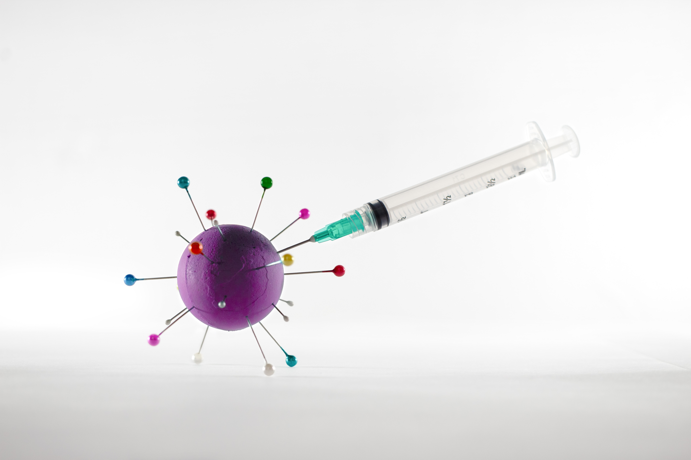

I utilize SQL queries to investigate and extract valuable insights from a consumer bank's database, which contains various tables storing data related to accounts, customers, employees, and transactions. This enables me to gain a deeper understanding of the interconnections among these tables.
The dataset contains 11 tables.
Photo by Andre Taissin on Unsplash

I have developed an interactive dashboard that allows users to analyze the global performance of the COVID-19 vaccine program. The dashboard includes a bar chart displaying the proportion of the population that has received partial or full vaccination in each country. Additionally, a color-coded world map provides an overview of the vaccinated population by country. Users can interact with the dashboard by filtering information based on continents or countries, as well as adjusting the start and end dates to focus on specific time periods if desired.
The dataset contains 321,959 observations.
Photo by Andre Taissin on Unsplash
Python | pandas | Matplotlib | NumPy

A retail business that specializes in pet products aims to extract valuable insights from their sales data in order to address marketing inquiries from stakeholders and make informed business decisions based on data-driven analysis.
The dataset contains 879 observations with 9 attributes.
Photo by okeykat on Unsplash
R | ggplot | Logistic Regression
Effective talent management plays a vital role in driving organizational growth and achieving business objectives. To support this endeavor, I have developed a logistic regression model utilizing an HR dataset. The model is designed to predict employee attrition, aiding in proactive decision-making and strategic planning within the organization.
The dataset has 1470 observations with 35 attributes.
Photo by Nick Fewings on Unsplash
Python | Matplotlib | seaborn | scikit-learn
In this project, machine learning techniques are employed to develop a predictive model that determines the likelihood of passenger survival during the tragic Titanic shipwreck. The logistic regression model is evaluated by submitting to Kaggle ML competition. By analyzing the validation dataset, the accuracy score of the model is calculated to assess its performance.
The dataset contains 891 observations with 11 attributes.
Photo by NOAA on Unsplash